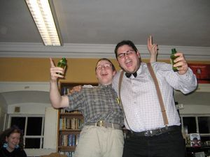

IRC
 De: La Frikipedia, la enciclopedia extremadamente seria.
De: La Frikipedia, la enciclopedia extremadamente seria.
 Usuarios del IRC celebrando algo, a saber.
IRC (siglas de Internet Retro Chat) o ierrecé es un protocolo de comunicación, inventado allá en los años 80 por un tal Jakko Origami (de nick Guis), que alcanzó su cenit en el año 1998, que terminó siendo de uso exclusivo para freaks después de la invención del Mésenller.
Su mecánica es la misma que casi todos los chats de internet, pero sólo con texto:
- Varias salas donde se reúne la gente a conversar sobre cosas como quién es el más avanzado socialmente, quién es capaz de beber más cubatas sin desplomarse, ligar con gente que luego no se parece en nada a quien han descrito o que te quiere robar los órganos o discutir sobre quién la tiene más larga.
- Se pueden enviar archivos de todo tipo, pero la gente se pasa sólo porno y hentai.
- Se pueden usar colores, pero los operadores no te dejan y te banean.
- Se pueden crear salas, pero si creas una tú no la va a visitar ni tu madre. Mejor métete en una ya hecha. Aunque no tendrás la satisfacción de ser el dueño del canal y poder imponer tu ley.
Usuarios
Sus habitantes se distribuyen entre:
- Frikis
- Amargados, Trolls de Internet, y otros indeseables.
- salidos, pederastas y demás deshechos sociales....
- Gente que se aburre mucho.
- Despistados, lammers, noobs y resto de cachocarnes que van por el mundo porque ven andar a la gente.
- Múltiples combinaciones de los anteriores.
- Krusher
- ÐarkSølid666
- Franco53
- operadores, estos estan caracterizados por tener una @ ó un op, y con ella se comunican con E.T
- bots, rellenan huecos en los canales , y asi el porno circula mas rápido
Canales
Suene haber canales para todo tipo de personas , normamente no se habla , eso es por que un día un tipo invento un aparato, y todos le adoran y le rinden culto con el silencio. Además cada vez que saludas, muere un un extraterrestre, y todos lo saben.
La popularidad de un canal depende de las personas que hay dentro. Normalmente estos entraron porque tenían a un mono apuntandoles en la cabeza con una patata, ya sabeis como son los monos con esas cosas.
Usuarios más comunes en el chat
- Relacciones publicas: Generalmente mujeres y chicas con novio o marido que entran al chat a pasar el rato como quein esta en la cafeteria juvenil de moda. Este tipo de usuario siemrpe esta hablando por el general, nunca acepta privados y, en muchas ocasiones, lo reitera por el general con "pepito25 no quiero privados". ¿Son molestos? desde mi punto de vista si, porque al igual que en la vida real hablando con ellos/as te sientes uno mas de su coleccion de amigos.
- Autista: Usuario que siempre esta conectado y no suele hablar ni por privados ni por el general, se podria decir que esta ahi en plan ocio viendo de lo que se habla como quien mira una tertulia televisiva o radiofonica, suelen ser bordes y egocentricos y si, como a mi, te gusta provocar a la gente la mayoria de las veces pican. ¿Son molestos? si porque si quieres conversacion con ellos y no sabes que son de este tipo te ofende ese egocentrismo. Tambien hay autistas que solo estan en el chat esperando a la persona con la que hablan todos los dias, generalmente tias.
- Troll: Yo mismo xD Es un usuario que gusta de crear controversia y provocar a la gente, ¿son molestos? pues depende para quien, generalmente cuando un canal esta muerto estos suelen ser muy utiles para darle vidilla creando bandos en contra o a favor de el y, por consiguiente, haciendo que la peña hable entre ella. Se dan tambien en foros.
- Buenin/a: Es amigo/a de todo el mundo, nunca se pelea con nadie y mas bien lo que busca es amistad que no encuentra en su vida real. ¿Son molestos? pues no, pero a veces puede resultar vomitivo lo pelotas que pueden llegar a ser y que no se defiendan de ataques personales proque no quieren llevarse mal con nadie.
- Malote: El/La tipico/a tio/a que tiene una vida social resuelta y desahogada que entra el chat pues a darselas de triunfador, pasar el rato mientras le vienen a buscar y a reirse para el mismo de la peña que hay en el canal, se diferencia del troll porque este no ataca abiertamente a los demas, sino que ataca de forma pasiva con su forma de ser y su chuleria, comportamientos del tipo "yo soy mejor que todos vosotros" implicitos en su manera de hablar y desprecio o indiferencia por lo que opinen de el/ella. ¿Son molestos? pues si para aquellos que tengan la autoestima baja por gente asi en la vida real y encima tener que aguantarlos en su mundillo virtual.
- Victima y/o depresivo: Se da mas en mujeres hasta donde he visto. Suelen ser usuarios que a poco que les des un margen de confianza te cuentan su vida y sus penas. Estos usuarios te toman como psicologo y solo hablan de ellos mismos, de vez en cuando haran como que se interesan por ti para "ser educados" pero es solo un espejismo ya que al poco te vuelven con sus problemas de pareja, familiares, personales, sociales, etcetera. ¿Son molestos? pues depende, te puedes sentir genial de ayudar a otras personas a sentirse mejor por tu apoyo pero a mi se me ha dado en algun caso de comportamientos de este tipo descaradamente egoistas y egocentricos, sin ir mas lejos hace poco una sudamericana me estaba contando sus problemas familiares a piñon fijo (no paraba y dale y dale que estoy triste que mi marido esto que la gente me hace lo otro) y le hice una pregunta ¿porque te tubiste que mudar de tu pueblo? y me salto que eso no era asunto mio que ella no me tenia porque contar su vida ¿acaso no lo estaba haciendo sin que yo se lo preguntara? xD. U otro caso en el que alague a una tia que se sentia fea y no paraba de ponerse a parir a si misma y yo le decia cosas bonitas para animarla hasta que llego un momento en que me entraba con la frase "dime cosas bonitas que estoy depre..." :S ni hola ni ostias xD. Pongo mas enfasis en estos porque son los mas molestos.
- Calientapollas: Siempre mujeres (evidentemente porque soy un tio xD), pueden ser a su vez victmistas depresivas. Son tias que te mandan fotos de ellas provocativas, por ejemplo en top o en bikini o incluso tapandose las tetas con las manos (sin ropa) con el fin de atraer mas tu atencion y conseguirte como "mascota" para que las diviertas, las cuentes chistes, las digas cosas bonitas, las escuches... en fin. Lo molesto de estas es que generalmente dejan ver entrelineas que tendrian sexo contigo o aceptarian ser tu novia, e incluso lo dicen abiertamente pero cuando las dices de quedar o te ponen escusas o directamente te dicen que no y te cuentan alguna escusa expediente X que saben que va a colar porque tu andas detras de su chirri. Te dan falsas esperanzas y te manejan. ¿Son molestas? no si sabes cortarles las alas a tiempo, por alguna extraña razon las mujeres se sienten mas atraidas por los que pasan de ellas a pesar de estar calentandoles la polla que por aquellos que pasan por su aro de calientapollismo y entonces son ellas las que te abren privados, pero esto es ya cuando llevas mucho hablando con ellas. Puede llegar a ser muy divertido jugar tu con ellas sin que se den cuenta, ya que no suelen ser muy inteligentes, esto es que te hagas derrogar, que no des explicaciones cuando has tardado en responder 1 hora o si no has respondido, etcetera.
- El Contrato fijo: Es como los autistas pero a diferencia de estos a veces hablan. Suelen ser usuarios que estan en el chat casi las 24 horas (incluso he visto alguno que usando una shell lo tiene las 24*7). ¿Son molestos? si el canal esta muy lleno si pero si es un canal "en vias de desarrollo" vienen bien para hacer bulto.
- El/La sociologo/a: Persona que entra al chat no para disfrutar y/o pasar el rato sino para investigar a las personas con diferentes fines como pueden ser convertirse en relacciones publicas, ligar mas, conocer necesidades o simplemente para ver que el/ella no es la unica persona infeliz del mundo. Suelen quedarse callados viendo de lo que se habla y como reacciona la gente y cuando alguien en particular le interesa abrirle privado o directamente hablar por el general con el/ella para descubrir un eslavon perdido de la sociologia. ¿Son molestos? depende si te mola ser utilizado como animal de laboratorio, hay gente que le mola xD.
- El/La Nuevo/a: Entra en un canal en que solo hay 10 usuarios y pregunta si hay algun/a chico/a que viva en el barrio tal, que escuche heavy, que tenga moto y que le/a guste hacer escursiones por el campo. También los/as hay que entran en el canal y empiezan por el general tal que asi "hola, soy nuevo/a, que tal todo por aqui, internet es muy divertido y se tira un rato hablando solo/a por el general pensando que los/as demas la/e estan leyendo, hasta que algun usuario le/la responde algo grosero y no vuelve a aparecer. ¿Son molestos? la verdad es que no, pero esa ingenuidad a veces es tan provocativa que no puedes evitar intentar tomarle/la el pelo.
Véase también
Autor(es):
- Krusher
- Mithran
- �?arkSølid666
- EmuAGR
- Doctor grijander
- MURO DE AGUAS
- GrimAngel
- SHION
- Frikiman
- Aque
Frikipedia 2005-2016, Licencia
GFDL 1.2 - Extraído por FrikiLeaks